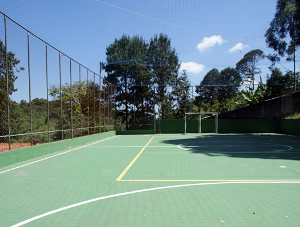
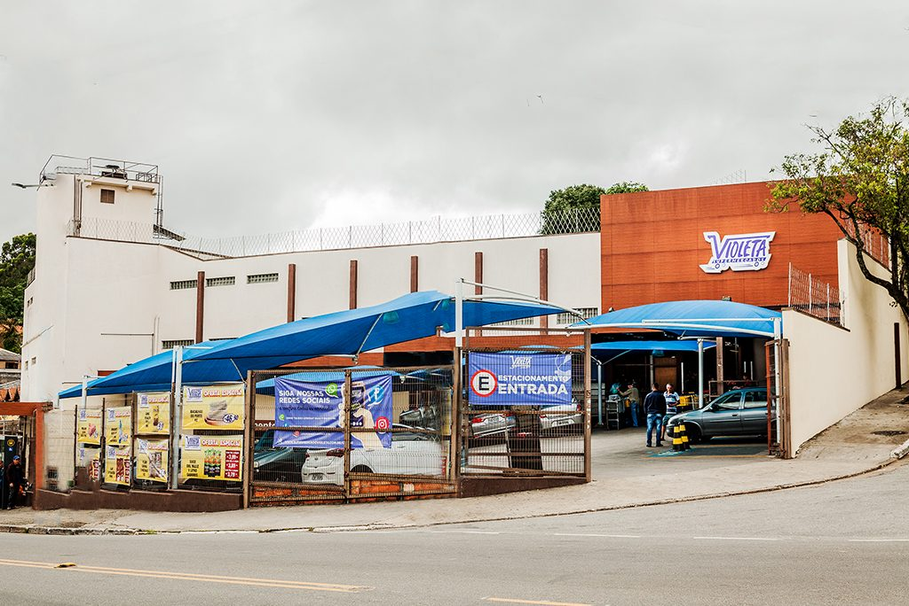

JARAGUÁ
Distrito desde 1948.
Curiosidades
Aqui temos muito lazer e diversão para todos. Como por exemplo o Parque Estadual do Jaraguá!
Muitos dizem que o Pico do Jaraguá é um vulcão desativado. O que é um mito!
O Jaraguá é um distrito desde 1948, por isso é tão extenso e mantém mais de 280 mil habitantes.
Lazer
Lazer é o que não falta nos bairros deste distrito. É possível observar que há diversos espaços de lazer para todas as idades. Aqui, temos muito contato com a natureza e também muito contato com diversos esportes [1]. Podemos citar dentre elas:
- Parque Estadual do Jaraguá (Trilhas Pai Zé, Bica e Silêncio) [1]
- Esportes (Ciclismo, Futebol, Etc.)
- Cantareira Norte Shopping
Educação
Os bairros do distrito são repletos de escolas, tanto públicas quanto particulares, além de ter muito transporte disponível para levar seus filhos com segurança. Além disso o bairro é repleto de cursos e atividades extracurriculares, como cursos de idiomas, escolinha de futebol, aeromodelismo, natação, dentre outros.[2]

Está gostando?
Clique aqui para saber a localização, e aqui para fazer um comentário ou sugestão do nosso site!

Comércio
Fome é algo que você não irá passar neste bairro, ele é repleto de restaurantes, pastelarias, pizzarias etc. Além disso, tem muitos mercados, então suprimentos, ferramentas, dentre outros estarão sempre em seu alcance.[3]
Informações Demográficas[4]
Área: 27,6 Km²
População: 281.824 hab
Densidade: 80,95 hab/ha
Renda Média: R$877,50
IDH: 0,791
Subprefeitura: Pirituba/Jaraguá
O Jaraguá está em 13º lugar no eanking de população dos distritos de São Paulo.
O IDH está em 77º lugar no ranking de IDH nos distritos de São Paulo, o que mostra que está mais baixo que a média.